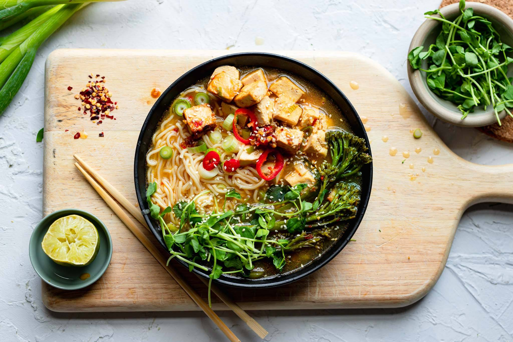

***Tofu Ramen Soup Recipe***

This is a classic comfort food dish, packed with flavour from the chilli, garlic and ginger and topped with tofu and veg for crunch.
It can be made in bulk and frozen for those days where you need something instant and delicious.